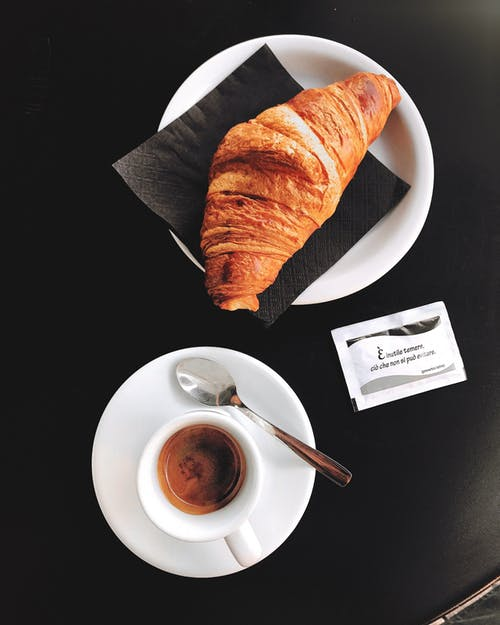
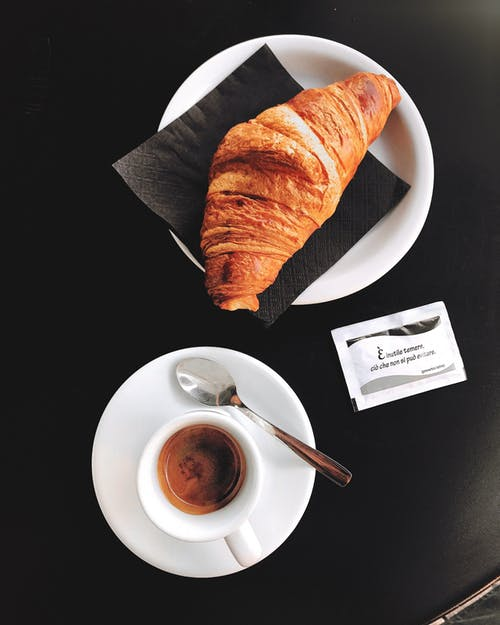
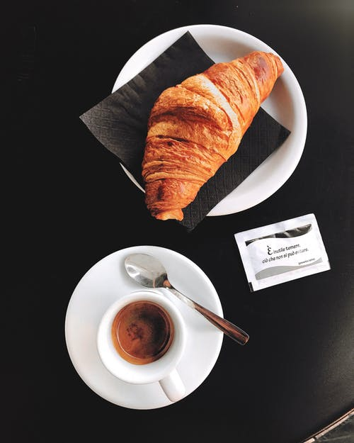

Selected Design
Even the all-powerful pointing has no conrtol about the blind text it is an almost unorthographic life
 

Even the all-powerful pointing has no conrtol about the blind text it is an almost unorthographic life One day however a small line of blind text by name of lorem A small river named uden flows
Even the all-powerful pointing has no conrtol about the blind text it is an almost unorthographic life One day however
Even the all-powerful pointing has no conrtol about the blind text it is an almost unorthographic life One day however a small line of blind text by name of lorem A small river named uden flows by thrir place and supplies it with the necessary regelialia.It is a paradisematic country. in which roasted parts of sentences fly into Far far away,behind the word mountains,far from the countries Vokalia and consonantia,there live the blind text.Separated they live in Bookmarksgrove
Even the all-powerful pointing has no conrtol about the blind text it is an almost unorthographic life

Even the all-powerful pointing has no conrtol about the blind text it is an almost unorthographic life